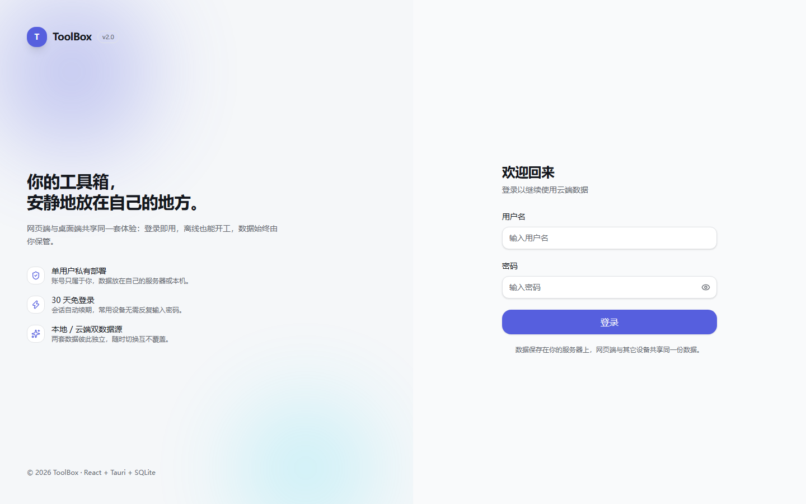
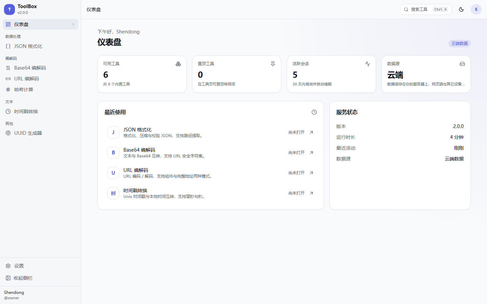
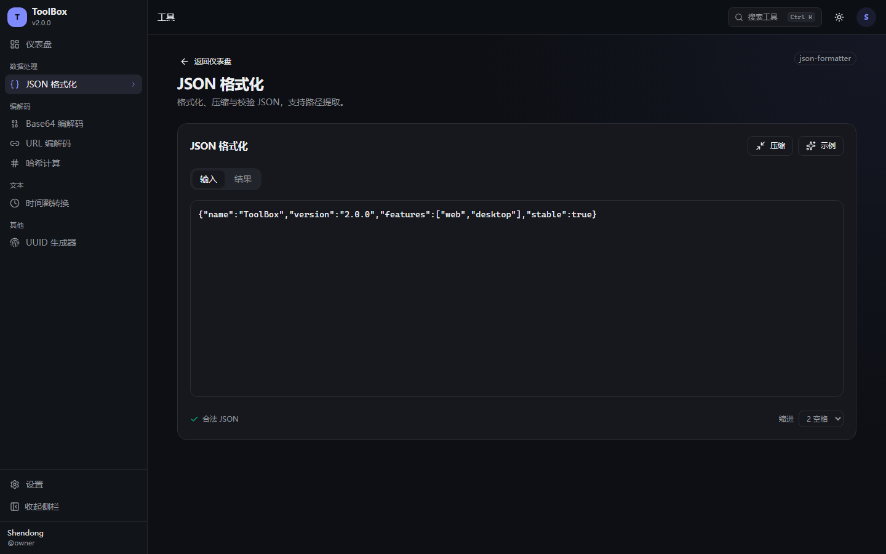
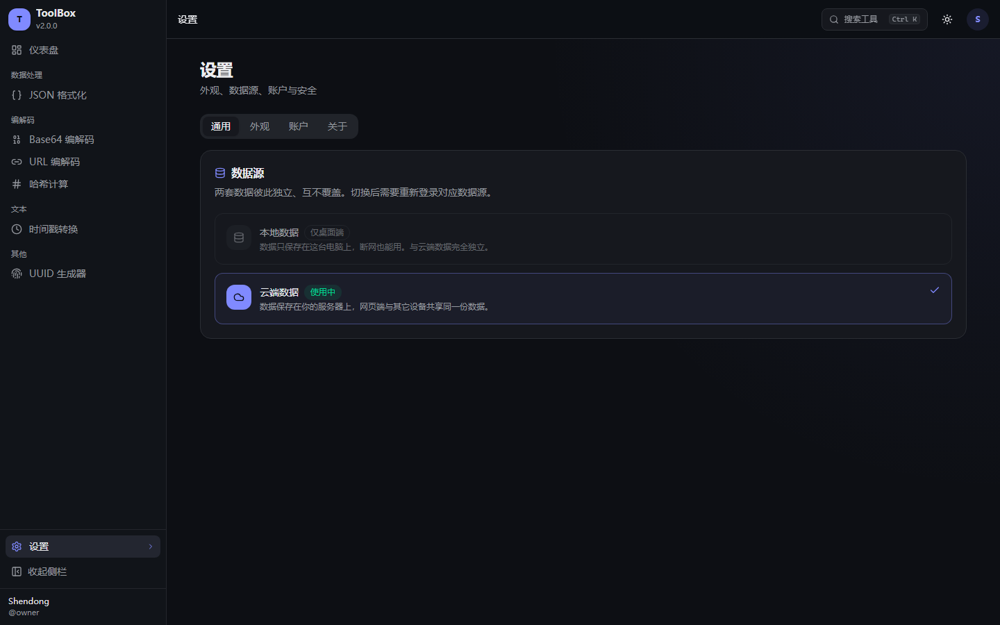
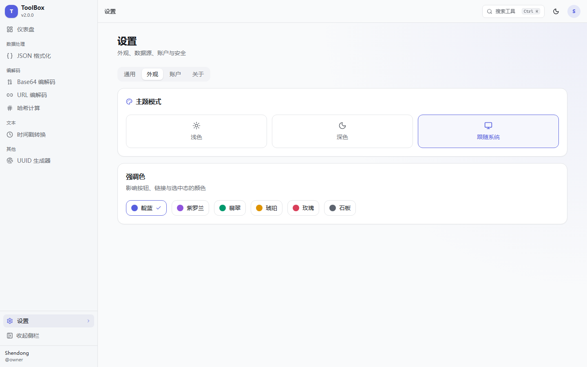
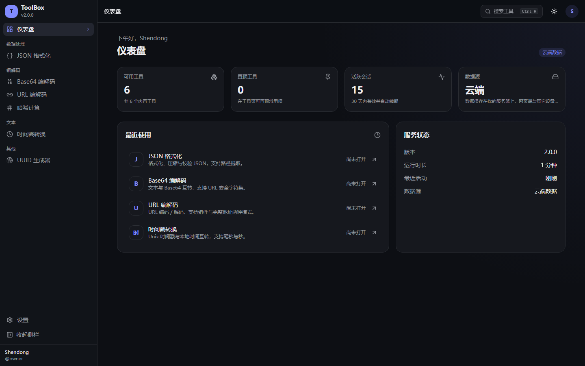

ToolBox 2.0 大版本重构 · 实施计划
从 Flutter 桌面应用重写为 React 网页端 + Tauri 2 桌面端，云端 SQLite 作为共享数据源； 桌面端另有独立的本地数据源，两套数据完全隔离、互不覆盖，默认使用本地。
产品形态
网页端（浏览器访问）+ 桌面端（Windows 安装包，约 6–10MB）。同一份 React 代码，两种外壳。
账号体系
单用户；首次部署后引导注册；会话 30 天、滑动续期；每个数据源各自一套账号。
数据
SQLite。云端在服务器，本地在 %APPDATA%；切换数据源只改「读写哪一套」。
1 · 目标与验收
| # | 验收标准 | 状态 |
|---|---|---|
| 1 | pnpm install && pnpm dev 同时起服务端与网页端，登录后进入壳层 | 已实现 |
| 2 | 库中无用户时登录页直接显示「创建管理员」（只填密码，用户名固定 owner），创建后永久关闭注册 | 已实现 |
| 3 | 会话 30 天、活跃自动续期；关掉浏览器 30 天内重开仍在线 | 已实现 |
| 4 | 桌面端默认本地数据源，断网可完整使用；设置里可切到云端 | 已实现 |
| 5 | 两套数据互不读写、互不覆盖；切回后原数据原样还在 | 已实现 |
| 6 | 1.x 残留为 0：Dart/Flutter/ForUI/vendored 依赖全部移除 | 已实现 |
| 7 | 交付本计划文档 + 可点击原型 | 已交付 |
| 8 | docker compose up -d 一条命令完成云端部署 | 已交付 |
2 · 拆除范围
2.0 不与 1.5 兼容：旧实现全部移除，1.x 历史保留在 v1.5.0 tag，可随时回看。
删除 lib/ (223 个 Dart 文件) test/ windows/ assets/ build/ .dart_tool/
删除 pubspec.yaml pubspec.lock analysis_options.yaml .metadata
删除 .flutter-plugins-dependencies .github/installer/ .github/workflows/release.yml
重写 .gitignore README.md
保留 LICENSE .git 历史 GitHub 仓库名user/*.json 与 2.0 的 SQLite 结构无关，直接丢弃；如需保留旧数据，请在升级前自行备份旧目录。
3 · 技术选型
UI 框架：shadcn/ui + Tailwind CSS v4
| 候选 | 漂亮 | 生态 | 可定制 | 结论 |
|---|---|---|---|---|
| shadcn/ui（Radix） | ★★★★★ | ★★★★☆ | ★★★★★（源码在仓库） | 采用 |
| Mantine v8 | ★★★★ | ★★★★★ | ★★★ | 备选 |
| Ant Design v5 | ★★★ | ★★★★★ | ★★ | 不采用（视觉偏重） |
| HeroUI | ★★★★ | ★★★ | ★★★★ | 不采用（长期稳定性） |
理由：组件源码落在仓库里，主题用 OKLCH 语义色，能做出一眼记住的视觉；底层 Radix 保证键盘、焦点与弹层行为正确；与 TanStack、sonner、lucide 天然组合。
桌面外壳：Tauri 2
| 维度 | Tauri 2（采用） | Electron 44 |
|---|---|---|
| 安装包 | 6–10MB | 90–120MB |
| 内存占用 | 30–80MB | 100–200MB |
| 运行时 | 系统 WebView2（Win10 1803+ 自带） | 自带 Chromium |
| 前置环境 | Rust + MSVC（本机已具备） | 无 |
| 原生能力 | Rust：托盘 / 单实例 / 更新 / 本地 SQLite | Node 生态最全 |
锁定版本
运行时 Node 24.17 · pnpm 11.28 · Rust 1.99.1
前端 React 19.3 · Vite 7.3.7 · TypeScript 5.9.3 · Tailwind 4.3.3
路由 TanStack Router 1.170 · TanStack Query 5.104 · Zustand 5.0
组件 Radix · lucide-react · sonner · cmdk
服务端 Fastify 5.12 · Drizzle ORM 0.45 · better-sqlite3 13 · @node-rs/argon2
桌面 Tauri 2.12 · rusqlite (bundled) · tiny_http · plugin-{store,log,updater,window-state,opener,dialog,single-instance}
质量 Vitest 5.0 · Playwright 1.64 · ESLint 9.39 · Prettier 3.94 · 本地 / 云端双数据源（核心）
这一版最关键的改动。数据源只决定读写哪一套数据，界面、工具、交互完全一致。
| 本地数据源（桌面端默认） | 云端数据源 | |
|---|---|---|
| 数据位置 | %APPDATA%com.shendongjuns.toolboxlocal.db | 服务器 /app/data/toolbox.db |
| 网络 | 完全不需要，可离线 | 需要 |
| 账号 | 本机独立账号 | 与网页端共用 |
| 访问方式 | Rust 在本机起 127.0.0.1 随机端口的 HTTP 服务，前端照常发请求 | 直连用户配置的服务器地址，Bearer 令牌 |
| 两套关系 | 完全独立：没有同步、没有覆盖、没有合并。切换只是换一个数据源连接。 | |
切换流程
设置 → 通用 → 数据源：[本地数据] [云端数据]
│
├─ 选择另一个数据源 → 清空当前登录态 → 跳该数据源的登录页
├─ 登录成功 → 数据层指向新源 → 回到仪表盘
└─ 原数据源的数据原封不动，切回来即可继续用一套逻辑，两种执行环境
页面代码只依赖 @toolbox/api-client 暴露的方法；底层传输层按数据源选择实现：
网页端用 Cookie，桌面端云端用 Bearer，桌面端本地打向本机 127.0.0.1 服务。
服务端与本地服务的接口形状一致，因此业务组件零分支。
5 · 仓库结构
tool-box/
├─ apps/
│ ├─ server/ Fastify 5：路由 / 鉴权 / Cookie / 限流 / 静态托管
│ ├─ web/ React 19 SPA（网页端与桌面渲染层共用）
│ └─ desktop/ Tauri 2：src-tauri/(Rust) + tauri.conf.json + icons
├─ packages/
│ ├─ contracts/ Zod schema + DTO + 内置工具目录（前后端唯一真源）
│ ├─ data/ Drizzle schema + 迁移 SQL + repository
│ └─ api-client/ 传输层：web-fetch(cookie) / desktop(bearer)
├─ docker/ Dockerfile · compose.yml
├─ docs/plan-2.0/ index.html（本文）· prototype.html · assets/
└─ .github/workflows/ ci.yml · release.yml常用脚本：pnpm dev、pnpm build、pnpm test、pnpm lint、pnpm desktop:dev、pnpm desktop:build。
6 · 数据模型
两套库同构：本地库与云端库使用同一份迁移 SQL，因此 repository 代码只写一遍。
users(id, username UNIQUE, password_hash, display_name,
created_at, updated_at, password_changed_at, last_login_at)
sessions(id, user_id → users, token_hash UNIQUE, kind('web'|'desktop'|'local'),
device_name, user_agent, ip,
created_at, last_used_at, expires_at, revoked_at)
settings(key PK, value, updated_at)
tool_prefs(tool_id PK, pinned, sort_order, last_opened_at, updated_at)- 时间统一为 epoch 毫秒整数，避免时区问题。
PRAGMA journal_mode=WAL, busy_timeout=5000, foreign_keys=ON。- 会话表只存令牌的
sha256，明文只存在于客户端。 - 迁移脚本幂等（
IF NOT EXISTS），服务端启动自动执行，失败拒绝启动。
7 · 认证与会话
| 项目 | 实现 |
|---|---|
| 首次注册 | GET /api/auth/bootstrap 返回 { initialized, username }；POST 仅在 users 为空时成功（409 表示已创建）。单用户系统：库中无用户时登录页直接显示「创建管理员」，只填密码，用户名固定 owner |
| 密码哈希 | Argon2id（19456 KiB / t=2 / p=1）；本地库用 sha256(salt+password) 轻量方案 |
| 规则 | 用户名 3–32 位 [a-zA-Z0-9_-]，密码 10–128 位，前后端共用同一份 Zod schema |
| 令牌 | base64url(randomBytes(32))，库中只存 sha256 |
| 有效期 | 30 天；距上次使用超过 1 小时才写库续期（写节流），无绝对上限 |
| 撤销 | 登出 / 改密（保留当前会话）/ 手动下线设备 / 过期清理 |
| 网页端 | Cookie tb_session：HttpOnly、SameSite=Lax、生产 Secure、Max-Age 30d；非安全方法校验 Origin |
| 桌面端 | Cookie 不参与；Authorization: Bearer，令牌存 Tauri store（本地模式存内存） |
| 限流 | 登录 10 次/分钟/IP，首次注册 5 次/分钟/IP |
接口清单
GET /api/auth/bootstrap POST /api/auth/bootstrap
POST /api/auth/login POST /api/auth/desktop-login
POST /api/auth/logout GET /api/auth/me
POST /api/auth/password GET /api/auth/sessions
DELETE /api/auth/sessions/:id POST /api/auth/sessions/revoke-all
GET /api/settings PUT /api/settings
GET /api/tools PATCH /api/tools/:id POST /api/tools/:id/touch
GET /api/dashboard GET /api/health统一错误体 { code, message, details? }；401 时前端清空登录态并跳转登录页。
8 · 桌面端实现
进程与安全
- Rust 主进程：窗口、托盘、单实例、更新、本地 SQLite 服务。
- WebView：React 应用，自定义标题栏（
-webkit-app-region: drag）。 - CSP 收紧到
default-src 'self'，外部链接一律交给系统浏览器。 - 关闭按钮默认最小化到托盘，真正退出走托盘菜单（可在设置中改为直接退出）。
- 单实例锁：第二次启动只聚焦已有窗口。
本地数据服务
启动时在 127.0.0.1 的随机端口起一个极小的 HTTP 服务（Rust + rusqlite），
提供与云端同形的 /api/auth/*、/api/settings、/api/tools 接口。
前端通过 invoke("local_api_port") 拿到端口，之后所有本地请求直接打过去。
这样做的好处：页面代码完全不知道数据来自哪里。
WebView (React) ──fetch──▶ 127.0.0.1:<随机端口> (Rust) ──▶ rusqlite ──▶ local.db
WebView (React) ──fetch──▶ https://你的服务器 (Node) ──▶ better-sqlite3 ──▶ toolbox.db窗口与打包
- 默认 1200×800、居中、最小 960×640；记住尺寸与最大化，不记位置（避免换显示器后开到屏幕外）。
- 托盘：单击显示窗口，右键「显示主窗口 / 退出 ToolBox」。
- 日志：Tauri log 插件，写入用户目录，轮转保留。
- 更新：
plugin-updater+ GitHub Releases，签名私钥只在 CI 中注入。 - 打包：
tauri build产出 NSIS（按用户安装，免管理员）与 MSI。
9 · 部署与 CI
# 1. 准备（可选：设置一次性注册口令）
cp docker/.env.example docker/.env
# 2. 启动（只监听 127.0.0.1:3000）
cd docker && docker compose up -d --build
# 3. 打开 http://127.0.0.1:3000 → 创建管理员Origin
与请求 Host，因此换任何域名都不需要改应用配置。
- 容器：多阶段构建，运行阶段非 root，内置
HEALTHCHECK /api/health；只绑定127.0.0.1:3000。 - 对外暴露：由部署者自行决定（反向代理 / 隧道 / 直连），应用侧无相关配置。
- 持久化：
./data挂载到/app/data，备份直接拷目录或用VACUUM INTO。 - 升级：拉新镜像重启，迁移在启动时自动执行。
| 环境变量 | 默认 | 说明 |
|---|---|---|
PORT | 3000 | 监听端口 |
DATABASE_PATH | ./data/toolbox.db | SQLite 文件路径 |
SESSION_TTL_DAYS | 30 | 会话有效期（天） |
SESSION_RENEW_THROTTLE_MIN | 60 | 滑动续期的写库节流 |
TRUST_PROXY | true | 信任 X-Forwarded-*，放在反向代理后保持开启 |
10 · 界面原型
以下截图直接取自本仓库运行中的实现（1440×900），不是设计稿。






带交互的原型见 prototype.html（注册 → 登录 → 仪表盘 → 工具 → 设置 → 命令面板，可切深浅色与网页/桌面外框）。
11 · 里程碑
| 里程碑 | 内容 | 状态 |
|---|---|---|
| M0 拆除与骨架 | 删除 1.x 全部文件，建立 workspace、ESLint、Prettier、tsconfig | 完成 |
| M1 数据与契约 | contracts / data 包、Drizzle schema、迁移 SQL、repository | 完成 |
| M2 服务端底座 | config、db、错误处理、健康检查、静态托管 | 完成 |
| M3 认证 | 首次注册、登录、登出、改密、会话管理、限流 | 完成 |
| M4 Web 壳层 | 设计系统、侧栏、顶栏、命令面板、登录/注册页 | 完成 |
| M5 工具与设置 | 6 个内置工具、仪表盘、设置四页、主题持久化 | 完成 |
| M6 桌面端 | Tauri 外壳、本地数据服务、数据源切换、托盘、单实例 | 完成 |
| M7 部署与 CI | Dockerfile、compose、CI 与发版工作流 | 完成 |
| M8 文档 | 本计划、可点击原型、截图、README | 完成 |
后续 Roadmap（不在本次）：SSH 终端、SFTP、代码仓库管理、系统监控。
12 · 测试
- 单元 / 集成：Vitest +
fastify.inject+ 临时 SQLite；覆盖首次注册、重复注册 409、错误密码、30 天有效期、Bearer 访问、登出失效、改密撤销其他会话、设置读写、工具置顶、健康检查（14 个用例全绿）。 - 类型：
pnpm -r typecheck全部通过（含cargo check）。 - 静态检查：ESLint 0 error。
- 手工回归：登录、仪表盘、工具、设置、深浅色（截图即回归记录）。
$ pnpm --filter @toolbox/server test
Test Files 1 passed (1)
Tests 14 passed (14)13 · 风险与关键决定
| 风险 / 决定 | 应对 |
|---|---|
| 本地与云端语义混淆 | 顶栏与登录页常驻数据源徽标；切换时明确提示「需要重新登录」 |
| 本地 HTTP 服务端口冲突 | 监听 127.0.0.1:0 由系统分配，端口通过 invoke 告知前端 |
| 本地服务仅本机可访问 | 绑定 127.0.0.1，不监听 0.0.0.0；令牌校验与云端同规则 |
| Tauri 首次编译慢 | CI 缓存 cargo 与 target；本地增量编译 |
| WebView2 缺失 | 安装包使用 downloadBootstrapper 兜底 |
| 更新私钥丢失 | 私钥只存 CI secrets 并离线备份；丢失后已安装用户无法自动更新 |
| 未签名 exe | 会触发 SmartScreen 提示，README 中说明；后续可购买代码签名证书 |
| SQLite 单写者 | 单进程 + WAL + 短事务；备份用 VACUUM INTO |
已确定的产品决策
| # | 决策 | 取值 |
|---|---|---|
| 1 | UI 框架 | shadcn/ui + Tailwind v4 |
| 2 | 桌面外壳 | Tauri 2（体积优先） |
| 3 | 默认数据源 | 本地，设置中可切云端 |
| 4 | 本地模式登录 | 需要，本地账号与云端账号独立 |
| 5 | 数据源切换 | 设置内即时切换 + 重新登录，无需重启 |
| 6 | 两套数据关系 | 完全独立，不同步、不覆盖 |
| 7 | 会话续期 | 纯滑动 30 天，无绝对上限 |
| 8 | 2.0 范围 | 认证 + 壳层 + 工具框架 + 6 个内置工具 |
14 · 2026-10-21 修复记录
首轮交付后做了一次全面审查，修复了以下问题（均已补回归测试）：
| # | 问题 | 原因与修复 |
|---|---|---|
| 1 | 桌面端无法启动 | 缺少 src/main.rs，只编译了 lib，产不出 exe —— 已补回入口文件。 |
| 2 | 桌面端本地数据全部请求失败 | Rust 本地 HTTP 服务没有 CORS 与 OPTIONS 处理，WebView 的 tauri://localhost 跨源被拦 —— 已补齐 CORS 头与预检响应。 |
| 3 | 桌面端插件全部不可用 | 缺少 capabilities/default.json —— 已按最小权限补齐。 |
| 4 | 桌面端窗口无法关闭/拖动 | 配置了 decorations:false 却没有实现自定义标题栏 —— 已恢复系统标题栏。 |
| 5 | tauri dev/build 不出前端 | beforeDevCommand/beforeBuildCommand 为空 —— 已指向 web 构建命令。 |
| 6 | 桌面端云端登录拿不到令牌 | 走的是网页端 /api/auth/login，且从不发 X-Toolbox-Client —— 已改为桌面端走 desktop-login 并带标识头。 |
| 7 | 所有写操作返回 403 | Vite 代理 changeOrigin:true 改写 Host，导致 Origin 与 Host 不一致 —— 已关闭改写，CSRF 同时兼容 X-Forwarded-Host。 |
| 8 | 整站白屏 / Too many re-renders | Base64、URL 编解码在渲染期间 setState —— 改为 useMemo 纯计算。 |
| 9 | 侧栏与顶栏消失 | _app.tsx 漏掉 AppShell 包裹 —— 已恢复。 |
| 10 | 切换数据源后数据串台 | Query 缓存键没有带数据源 —— 已统一加 sourceKey 前缀并清缓存。 |
| 11 | 刷新桌面端就掉登录 | 本地令牌只存内存 —— 已改为存 Tauri store，与云端令牌分开保存。 |
| 12 | 构建因空 pubkey 失败 | updater 未配置签名 —— 已移除该插件依赖，避免阻断构建。 |
| 13 | 注册入口会永久消失 | 原先只在 users 为空时显示注册页，一旦错过就没有入口 —— 改为登录页直接内嵌「创建管理员」，库中无用户时永远可见，创建后永久关闭。 |
| 14 | 部署强依赖域名与 HTTPS | 已删除 PUBLIC_ORIGIN / COOKIE_SECURE 配置，改为同源比较 + secure:"auto"。 |
15 · 实施状态
已完成
- workspace 与三端骨架
- 服务端全部接口 + 14 个集成测试
- 网页端全部页面与 6 个工具
- Tauri 外壳 + 本地 SQLite 服务（cargo check 通过）
- Docker / CI / Release
- 本计划文档与截图
下一步建议
- 桌面安装包在真机上跑一遍（NSIS + 托盘 + 更新）
- Playwright E2E 覆盖登录与数据源切换
- 按 Roadmap 迁移 SSH / SFTP 等旧工具